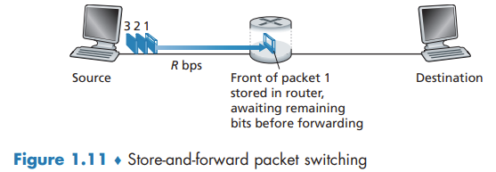
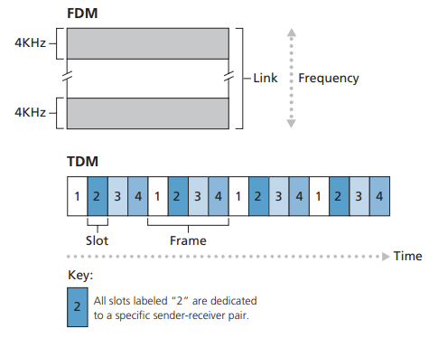

The Network Core
1.3 The network core
Packet switching
Store-and-forward Transmission
Most packet switches use store-and-forward transmission at the inputs to the links. Store-and-forward transmission means that the packet switch must receive the entire packet before it can begin to transmit the first bit of the packet onto the outbound link.
End-to-end delay

Queuing Delays and Packet Loss
For each attached link, the packet switch has an output buffer. If an arriving packet needs to be transmitted onto a link but finds the link busy with the transmission of another packet, the arriving packet must wait in the output buffer.
If the buffer is completely full, packet loss will occur - either the arriving packet or one of the already-queued packets will be dropped.
Forwarding Tables and Routing Protocols
When a source end system wants to send a packet to a destination end system, the source includes the destination’s IP address in the packet’s header. Each router has a forwarding table that maps destination addresses (or portions of the destination addresses) to that router’s outbound links. Routing protocols that are used to automatically set the forwarding tables.
Circuit Switching
In circuit-switched networks, the resources needed along a path (buffers, link transmission rate) to provide for communication between the end systems are reserved for the duration of the communication session between the end systems.
Multiplexing in Circuit-Switched Networks
A circuit in a link is implemented with either frequency-division multiplexing (FDM) or time-division multiplexing (TDM). With FDM, the frequency spectrum of a link is divided up among the connections established across the link. For a TDM link, time is divided into frames of fixed duration, and each frame is divided into a fixed number of time slots.

A Network of Networks
Our first network structure, Network Structure 1, interconnects all of the access ISPs with a single global transit ISP. The access ISP is said to be a customer and the global transit ISP is said to be a provider.
This leads to Network Structure 2, which consists of the hundreds of thousands of access ISPs and multiple global transit ISPs. A two-tier hierarchy with global transit providers residing at the top tier and access ISPs at the bottom tier.
In any given region, there may be a regional ISP to which the access ISPs in the region connect. Each regional ISP then connects to tier-1 ISPs. There is customer-provider relationship at each level of the hierarchy. We refer to this multi-tier hierarchy, which is still only a crude approximation of today’s Internet, as Network Structure 3.
To build a network that more closely resembles today’s Internet, we must add points of presence (PoPs), multi-homing, peering, and Internet exchange points (IXPs) to the hierarchical Network Structure 3. PoPs exist in all levels of the hierarchy, except for the bottom (access ISP) level. A PoP is simply a group of one or more routers (at the same location) in the provider’s network where customer ISPs can connect into the provider ISP. We refer to this ecosystem—consisting of access ISPs, regional ISPs, tier-1 ISPs, PoPs, multi-homing, peering, and IXPs—as Network Structure 4.
We now finally arrive at Network Structure 5, which describes today’s Internet. Network Structure 5 builds on top of Network Structure 4 by adding content-provider networks. Google is currently one of the leading examples of such a content-provider network.